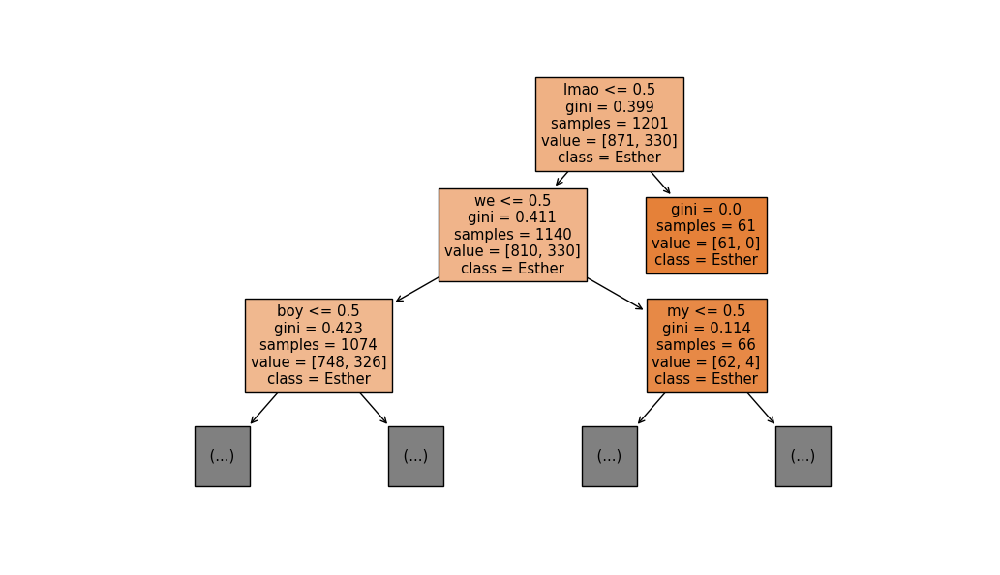

Current Projects
Lecture Notes || big
These are my notes for the courses I took at the University of Toronto (or things I studied on my own, those without course codes), starting from Summer 2023.
Summer 2023 {CSC311: Introduction to Machine Learning
MAT334: Complex Variables
# Last updated 7 July 2023
}The principle is to leave minimal exercises for the readers. Feel free to reach out to me with any corrections or suggestions you may have!
Investigation of Scientific CMOS Detectors for Astronomical Application || Dunlap Institute @ UofT
Recent studies have demonstrated that commercial-off-the-shelf (COTS) scientific CMOS (sCMOS) cameras offer comparable or even superior performance to modern CCDs. However, it is still necessary to conduct performance evaluations on the latest-generation sCMOS chips. Moreover, the scientific community has shown interest in CMOS detectors for upcoming research programs, such as the proposed Cosmological Advanced Survey Telescope for Optical and UV Research (CASTOR) led by the Canadian Space Agency. The project aims to investigate the scientific potential of COTS sCMOS detectors, focusing on those with large pixel sizes (>10 microns/pixel) and ultra-low read noise levels suitable for photon-counting. Currently, no such sCMOS detectors are available in the instrumentation labs at Dunlap or DAA. The objective of the project is to develop a versatile, high-performance CMOS detector that can be utilized by all researchers at Dunlap.3D modelling with Blender || big [Blender, 3D modelling]
Join my Blender 3D modelling journey
Determining whether a message is sent by Esther or Henry || mini [machine learning, python]
This mini project involves applying DecisionTreeClassifier from the scikit-learn python library. The dataset comprises group chat conversations involving myself, Henry, and Esther and 🐦 (but the dataset for 🐦 is too small for the model to be good at categorizing so 🐦 was not included). The classifier is trained using gini, log loss, and entropy criteria, with a maximum depth ranging from 2 to 14. The model achieves a validation accuracy of 0.76 in determining whether a message is sent by Henry or Esther, with optimal parameters: max depth of 12 and gini criterion. The topmost feature, "lmao", shows the highest information gain of 0.024. To delve deeper into machine learning concepts, refer to my comprehensive notes on "Introduction to Machine Learning" above. Other keywords, "duck", "hai", and "alr" have information gains of 0.0031, 0.011, and 0.0035, respectively. The first two layers of the tree are shown below:
